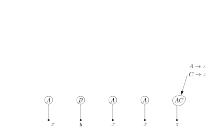
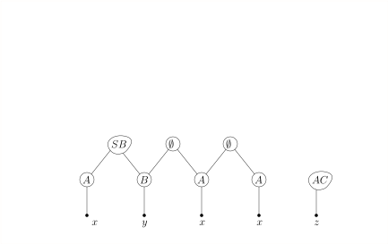
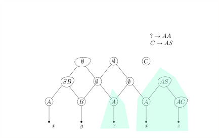
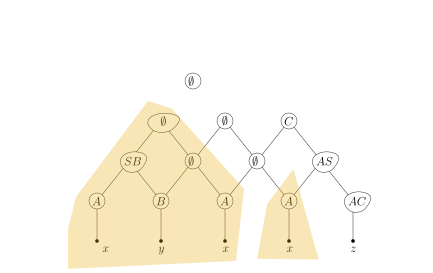

6.10 Allgemeines Parsing./wly/06/10-general-parsing.wly:2:11
Wir haben drei Methoden kennengelernt, kontextfreie./wly/06/10-general-parsing.wly:4:5 Sprachen zu parsen: rekursiver Abstieg (mit Demoseite./wly/06/10-general-parsing.wly:5:5 ./wly/06/10-general-parsing.wly:6:5drawManualGrammar.html./wly/06/10-general-parsing.wly:6:6),./wly/06/10-general-parsing.wly:6:121 die LL-Parser (die die Mengen ./wly/06/10-general-parsing.wly:7:5$\First_k(X)$./wly/06/10-general-parsing.wly:7:35 ./wly/06/10-general-parsing.wly:7:48 berechnen, wie auf./wly/06/10-general-parsing.wly:8:5 ./wly/06/10-general-parsing.wly:9:5drawFirstComputation.html./wly/06/10-general-parsing.wly:9:6 ./wly/06/10-general-parsing.wly:9:127 demonstriert), und die LR-Parser (die die Teilbäume./wly/06/10-general-parsing.wly:10:5 auf den Stack legen und nach Blüten suchen, hier die./wly/06/10-general-parsing.wly:11:5 Demoseite./wly/06/10-general-parsing.wly:12:5 ./wly/06/10-general-parsing.wly:13:5drawLR0ParserPrefixArithmetic./wly/06/10-general-parsing.wly:13:6 ./wly/06/10-general-parsing.wly:13:140 für arithmetische Ausdrücke). Rekursiver Abstieg kann,./wly/06/10-general-parsing.wly:14:5 wenn man nicht vorsichtig ist, in Endlosschleifen./wly/06/10-general-parsing.wly:15:5 landen und kann im Allgemeinen selbst bei einfachen./wly/06/10-general-parsing.wly:16:5 Grammatiken exponentielle Laufzeit aufweisen../wly/06/10-general-parsing.wly:17:5 LL-Parser und LR-Parser funktionieren schlicht nicht./wly/06/10-general-parsing.wly:18:5 für allgemeine kontextfreie Grammatiken../wly/06/10-general-parsing.wly:19:5 Standardbeispiel ist die Palindromsprache ohne./wly/06/10-general-parsing.wly:20:5 Kennzeichnung der Mitte:./wly/06/10-general-parsing.wly:21:5
$$
\begin{align*}
S&\rightarrow aSa \\
S&\rightarrow bSb \\
S&\rightarrow a \ | \ b \ | \ \epsilon
\end{align*}
$$./wly/06/10-general-parsing.wly:23:5
Weder LL-Parser noch LR-Parser können bei langen./wly/06/10-general-parsing.wly:29:5 Wörtern wie ./wly/06/10-general-parsing.wly:30:5$aaaaaaaaaaaaaabbaaaaaaaaaaaaaa$./wly/06/10-general-parsing.wly:30:17 ./wly/06/10-general-parsing.wly:30:49 erkennen, wo die Mitte ist. Das muss man aber wissen,./wly/06/10-general-parsing.wly:31:5 denn sonst landet man in einer Sackgasse. Es gilt./wly/06/10-general-parsing.wly:32:5 sogar: jeder Kellerautomat für diese Sprache muss./wly/06/10-general-parsing.wly:33:5 nichtdeterministisch sein (was wir an dieser Stelle./wly/06/10-general-parsing.wly:34:5 weder formal definieren noch beweisen). Noch schlimmer./wly/06/10-general-parsing.wly:35:5 steht es mit Grammatiken wie./wly/06/10-general-parsing.wly:36:5
$$
\begin{align*}
S&\rightarrow AY \ \ | XC \\
A&\rightarrow aA \ | \ \epsilon \\
C&\rightarrow cC \ | \ \epsilon \\
X&\rightarrow aXb \ | \epsilon \\
Y&\rightarrow bYc \ | \epsilon
\end{align*}
$$./wly/06/10-general-parsing.wly:38:5
Diese erzeugt die Sprache./wly/06/10-general-parsing.wly:46:5
$$
\begin{align*}
L = \{ a^i b^j c^k \ | \ i = j \textnormal{ oder } j = k \}
\end{align*}
$$./wly/06/10-general-parsing.wly:48:5
Die Grammatik ist ./wly/06/10-general-parsing.wly:52:5mehrdeutig./wly/06/10-general-parsing.wly:52:24,./wly/06/10-general-parsing.wly:52:35 insbesondere kann./wly/06/10-general-parsing.wly:52:35 jedes Wort der Form ./wly/06/10-general-parsing.wly:53:5$a^i b^i c^i$./wly/06/10-general-parsing.wly:53:25 auf zwei Weisen./wly/06/10-general-parsing.wly:53:38 abgeleitet werden: via ./wly/06/10-general-parsing.wly:54:5$AY$./wly/06/10-general-parsing.wly:54:28 und via ./wly/06/10-general-parsing.wly:54:32$XC$./wly/06/10-general-parsing.wly:54:41../wly/06/10-general-parsing.wly:54:45 Man kann./wly/06/10-general-parsing.wly:54:45 sogar zeigen, dass ./wly/06/10-general-parsing.wly:55:5jede./wly/06/10-general-parsing.wly:55:25 äquivalente Grammatik ./wly/06/10-general-parsing.wly:55:30$G'$./wly/06/10-general-parsing.wly:55:53,./wly/06/10-general-parsing.wly:55:57 ./wly/06/10-general-parsing.wly:55:57 die also die gleiche Sprache ./wly/06/10-general-parsing.wly:56:5$L$./wly/06/10-general-parsing.wly:56:34 erzeugt, mehrdeutig./wly/06/10-general-parsing.wly:56:37 sein muss; man sagt, die Sprache ./wly/06/10-general-parsing.wly:57:5$L$./wly/06/10-general-parsing.wly:57:38 ist ./wly/06/10-general-parsing.wly:57:41inhärent./wly/06/10-general-parsing.wly:57:47 mehrdeutig./wly/06/10-general-parsing.wly:58:5../wly/06/10-general-parsing.wly:58:16 Für nichtdeterministische oder gar./wly/06/10-general-parsing.wly:58:16 mehrdeutige Grammatiken / Sprachen sind LL- und./wly/06/10-general-parsing.wly:59:5 LR-Parser unbrauchbar. Gibt es eine allgemeine./wly/06/10-general-parsing.wly:60:5 Methode, die für alle Grammatiken funktioniert? Ja,./wly/06/10-general-parsing.wly:61:5 den sogenannten CYK-Algorithmus. Nur leider ist die./wly/06/10-general-parsing.wly:62:5 nicht besonders schnell. Sie hat kubische Laufzeit./wly/06/10-general-parsing.wly:63:5 ./wly/06/10-general-parsing.wly:64:5$O(n^3)$./wly/06/10-general-parsing.wly:64:5,./wly/06/10-general-parsing.wly:64:13 was zwar in der theoretischen Informatik./wly/06/10-general-parsing.wly:64:13 als ./wly/06/10-general-parsing.wly:65:5effizient./wly/06/10-general-parsing.wly:65:10 durchgeht, in der Praxis leider meist./wly/06/10-general-parsing.wly:65:20 unbrauchbar ist../wly/06/10-general-parsing.wly:66:5
Chomsky-Normalform./wly/06/10-general-parsing.wly:69:9
Eine kontextfreie Grammatik ist in./wly/06/10-general-parsing.wly:71:5 ./wly/06/10-general-parsing.wly:72:5Chomsky-Normalform./wly/06/10-general-parsing.wly:72:6,./wly/06/10-general-parsing.wly:72:25 wenn jede Produktion eine der./wly/06/10-general-parsing.wly:72:25 folgenden Formen hat:./wly/06/10-general-parsing.wly:73:5
$$
\begin{align*}
X&\rightarrow YZ \\
X&\rightarrow a
\end{align*}
$$./wly/06/10-general-parsing.wly:75:5
Eine solche Sprache kann offensichtlich nicht das./wly/06/10-general-parsing.wly:80:5 Wort ./wly/06/10-general-parsing.wly:81:5$\epsilon$./wly/06/10-general-parsing.wly:81:10 ableiten. Daher lassen wir als./wly/06/10-general-parsing.wly:81:20 Sonderregel die Produktion./wly/06/10-general-parsing.wly:82:5
$$
\begin{align*}
S&\rightarrow \epsilon
\end{align*}
$$./wly/06/10-general-parsing.wly:84:5
zu, verbieten dann aber, dass das Startsymbol ./wly/06/10-general-parsing.wly:88:5$S$./wly/06/10-general-parsing.wly:88:51 auf./wly/06/10-general-parsing.wly:88:54 der rechten Seite einer Produktion vorkommen kann../wly/06/10-general-parsing.wly:89:5
Theorem 6.10.1./wly/06/10-general-parsing.wly:91:5 ./wly/06/10-general-parsing.wly:91:5 Zu jeder kontextfreien Grammatik gibt es eine./wly/06/10-general-parsing.wly:92:9 äquivalente Grammatik in Chomsky-Normalform../wly/06/10-general-parsing.wly:93:9
Anstatt hier einen formalen Beweis anzugeben (den Sie./wly/06/10-general-parsing.wly:95:5 sich, wenn Sie wollen, im Lehrbuch oder auf Wikipedia./wly/06/10-general-parsing.wly:96:5 anschauen können), lasse ich Sie lieber anhand einer./wly/06/10-general-parsing.wly:97:5 Übungsaufgabe die Konstruktion von selbst verstehen:./wly/06/10-general-parsing.wly:98:5
Übungsaufgabe 6.10.1./wly/06/10-general-parsing.wly:100:5 ./wly/06/10-general-parsing.wly:100:5 Finden Sie zu der folgenden kontextfreien Grammatik./wly/06/10-general-parsing.wly:101:9
$$
\begin{align*}
S&\rightarrow A \ | \ Bb \ | \ C \\
A&\rightarrow xyB \ | \ B \ | \ BC \\
B&\rightarrow yzC \ | \ AC \\
C&\rightarrow xzA \ | \ AB \ | \ \epsilon
\end{align*}
$$./wly/06/10-general-parsing.wly:103:9
eine äquivalente in Chomsky-Normalform. Fragen, die./wly/06/10-general-parsing.wly:110:9 Sie sich dabei stellen sollten:./wly/06/10-general-parsing.wly:111:9
-
Für welche Nichtterminale gibt es ./wly/06/10-general-parsing.wly:115:17$U \Step{}^* V$./wly/06/10-general-parsing.wly:115:51?./wly/06/10-general-parsing.wly:115:66 ./wly/06/10-general-parsing.wly:115:66 Zeichnen Sie ein Bildchen mit all diesen ./wly/06/10-general-parsing.wly:116:17$\Step{}^*$./wly/06/10-general-parsing.wly:116:58 ./wly/06/10-general-parsing.wly:116:69 -Pfeilen../wly/06/10-general-parsing.wly:117:17
-
Von welchen Nichtterminalen können Sie überhaupt./wly/06/10-general-parsing.wly:120:17 Wörter ableiten, also ./wly/06/10-general-parsing.wly:121:17$U \Step{}^* w \in \Sigma^*$./wly/06/10-general-parsing.wly:121:39?./wly/06/10-general-parsing.wly:121:67 ./wly/06/10-general-parsing.wly:121:67 Wie finden Sie das im Allgemeinen heraus?./wly/06/10-general-parsing.wly:122:17
-
Welche Nichtterminale können ./wly/06/10-general-parsing.wly:125:17$\epsilon$./wly/06/10-general-parsing.wly:125:46 ableiten,./wly/06/10-general-parsing.wly:125:56 also ./wly/06/10-general-parsing.wly:126:17$U \Step{}^* \epsilon$./wly/06/10-general-parsing.wly:126:22?./wly/06/10-general-parsing.wly:126:44 Wie finden Sie das im./wly/06/10-general-parsing.wly:126:44 Allgemeinen heraus?./wly/06/10-general-parsing.wly:127:17
Wenn nun ./wly/06/10-general-parsing.wly:129:5$G$./wly/06/10-general-parsing.wly:129:14 in Chomsky-Normalform vorliegt und wir./wly/06/10-general-parsing.wly:129:17 für ein gegebenes Eingabewort ./wly/06/10-general-parsing.wly:130:5$w$./wly/06/10-general-parsing.wly:130:35 eine Ableitung./wly/06/10-general-parsing.wly:130:38 ./wly/06/10-general-parsing.wly:131:5$G: S \Step{}^* w$./wly/06/10-general-parsing.wly:131:5 finden wollen (oder feststellen,./wly/06/10-general-parsing.wly:131:23 dass es keine gibt), so ist die erste Beobachtung,./wly/06/10-general-parsing.wly:132:5 dass eine Linksableitung die Form./wly/06/10-general-parsing.wly:133:5
$$
\begin{align*}
S&\Step{}^* AB \Step{}^* uB \Step{}^* uv
\end{align*}
$$./wly/06/10-general-parsing.wly:135:5
haben muss, für ./wly/06/10-general-parsing.wly:139:5$w = uv$./wly/06/10-general-parsing.wly:139:21../wly/06/10-general-parsing.wly:139:29 Wenn wir die Unterteilung./wly/06/10-general-parsing.wly:139:29 von ./wly/06/10-general-parsing.wly:140:5$w$./wly/06/10-general-parsing.wly:140:9 in ./wly/06/10-general-parsing.wly:140:12$u$./wly/06/10-general-parsing.wly:140:16 und ./wly/06/10-general-parsing.wly:140:19$v$./wly/06/10-general-parsing.wly:140:24 kennen würden, so könnten wir./wly/06/10-general-parsing.wly:140:27 rekursiv fragen, wie man denn ./wly/06/10-general-parsing.wly:141:5$A \Step{}^* u$./wly/06/10-general-parsing.wly:141:35 und./wly/06/10-general-parsing.wly:141:50 ./wly/06/10-general-parsing.wly:142:5$B \Step{}^* v$./wly/06/10-general-parsing.wly:142:5 ableitet. Da wir sie aber ./wly/06/10-general-parsing.wly:142:20nicht./wly/06/10-general-parsing.wly:142:48 ./wly/06/10-general-parsing.wly:142:54 kennen, also konkret nicht wissen, wie lange ./wly/06/10-general-parsing.wly:143:5$u$./wly/06/10-general-parsing.wly:143:50 und./wly/06/10-general-parsing.wly:143:53 ./wly/06/10-general-parsing.wly:144:5$v$./wly/06/10-general-parsing.wly:144:5 sind, können wir alle Möglichkeiten./wly/06/10-general-parsing.wly:144:8 durchprobieren. Da ./wly/06/10-general-parsing.wly:145:5$G$./wly/06/10-general-parsing.wly:145:24 in Chomsky-Normalform./wly/06/10-general-parsing.wly:145:27 vorliegt, wissen wir, dass ./wly/06/10-general-parsing.wly:146:5$|u| \geq 1$./wly/06/10-general-parsing.wly:146:32 und./wly/06/10-general-parsing.wly:146:44 ./wly/06/10-general-parsing.wly:147:5$|v| \geq 1$./wly/06/10-general-parsing.wly:147:5,./wly/06/10-general-parsing.wly:147:17 also ./wly/06/10-general-parsing.wly:147:17$1 \leq |u| \leq |w|-1$./wly/06/10-general-parsing.wly:147:24../wly/06/10-general-parsing.wly:147:47 Wir./wly/06/10-general-parsing.wly:147:47 probieren also alle ./wly/06/10-general-parsing.wly:148:5$n-1$./wly/06/10-general-parsing.wly:148:25 möglichen Zerlegungen von./wly/06/10-general-parsing.wly:148:30 ./wly/06/10-general-parsing.wly:149:5$w$./wly/06/10-general-parsing.wly:149:5 durch. Wenn wir das rekursiv täten, dann würden./wly/06/10-general-parsing.wly:149:8 das eine enorme Laufzeit verursachen. Der Trick./wly/06/10-general-parsing.wly:150:5 besteht darin, Zwischenergebnisse systematisch zu./wly/06/10-general-parsing.wly:151:5 berechnen, um somit Laufzeit zu sparen../wly/06/10-general-parsing.wly:152:5
Der CYK-Algorithmus./wly/06/10-general-parsing.wly:155:9
Die oben skizzierte Idee ist im CYK-Algorithmus./wly/06/10-general-parsing.wly:157:5 konkretisiert (benannt nach John Cocke, Daniel Younger./wly/06/10-general-parsing.wly:158:5 und Tadao Kasami). Für die praktische Anwendung ist./wly/06/10-general-parsing.wly:159:5 dieser weniger relevant. Dafür ist er ein wunderbares./wly/06/10-general-parsing.wly:160:5 Beispiel für einen Algorithmus, der auf dem Prinzip./wly/06/10-general-parsing.wly:161:5 des ./wly/06/10-general-parsing.wly:162:5Dynamic Programing./wly/06/10-general-parsing.wly:162:10 fußt, welches Sie in der./wly/06/10-general-parsing.wly:162:29 Vorlesung ./wly/06/10-general-parsing.wly:163:5Algorithmen und./wly/06/10-general-parsing.wly:163:16 Komplexität./wly/06/10-general-parsing.wly:164:5 ./wly/06/10-general-parsing.wly:164:95 im dritten Semester ausführlicher kennenlernen wollen../wly/06/10-general-parsing.wly:165:5 Wir beschränken uns bei dem folgenden Algorithmus./wly/06/10-general-parsing.wly:166:5 zunächst darauf, die Frage zu beantworten, ob den./wly/06/10-general-parsing.wly:167:5 überhaupt ./wly/06/10-general-parsing.wly:168:5$S \Step{}^* w$./wly/06/10-general-parsing.wly:168:15 gilt, und interessieren uns./wly/06/10-general-parsing.wly:168:30 erst einmal nicht dafür eine solche Ableitung auch zu./wly/06/10-general-parsing.wly:169:5 finden (in der Algorithmik versteht man das als./wly/06/10-general-parsing.wly:170:5 ./wly/06/10-general-parsing.wly:171:5Entscheidungsproblem./wly/06/10-general-parsing.wly:171:6,./wly/06/10-general-parsing.wly:171:27 im Gegensatz zu dem./wly/06/10-general-parsing.wly:171:27 allgemeinerin ./wly/06/10-general-parsing.wly:172:5Suchproblem./wly/06/10-general-parsing.wly:172:20)../wly/06/10-general-parsing.wly:172:32 Der Entwurf eines./wly/06/10-general-parsing.wly:172:32 Dynamic-Programming-Algorithmus beginnt oft mit der./wly/06/10-general-parsing.wly:173:5 folgenden Frage: ./wly/06/10-general-parsing.wly:174:5Was sind sinnvolle./wly/06/10-general-parsing.wly:174:23 Zwischenergebnisse?./wly/06/10-general-parsing.wly:175:5 In unserem Falle sind Ableitungen./wly/06/10-general-parsing.wly:175:25 der Form./wly/06/10-general-parsing.wly:176:5
$$
\begin{align*}
X&\Step{}^* u
\end{align*}
$$./wly/06/10-general-parsing.wly:178:5
sinnvolle Zwischenergebnisse, wenn ./wly/06/10-general-parsing.wly:182:5$u$./wly/06/10-general-parsing.wly:182:40 ein Teilwort./wly/06/10-general-parsing.wly:182:43 von ./wly/06/10-general-parsing.wly:183:5$w$./wly/06/10-general-parsing.wly:183:9 ist, also ./wly/06/10-general-parsing.wly:183:12$w = v_1 u v_2$./wly/06/10-general-parsing.wly:183:23../wly/06/10-general-parsing.wly:183:38 Konkret schreiben./wly/06/10-general-parsing.wly:183:38 wir ./wly/06/10-general-parsing.wly:184:5$w = w_0 w_1 \dots w_{n-1}$./wly/06/10-general-parsing.wly:184:9 und definieren./wly/06/10-general-parsing.wly:184:36
$$
\begin{align*}
w[i:j] := w_i w_{i+1} \dots w_{j-1}
\end{align*}
$$./wly/06/10-general-parsing.wly:186:5
und./wly/06/10-general-parsing.wly:190:5
$$
\begin{align*}
N_{i,j} := \{X \in N \ | \ X \Step{}^* w[i:j]\} \ .
\end{align*}
$$./wly/06/10-general-parsing.wly:192:5
Das ist also die Menge der Nichtterminale, die das./wly/06/10-general-parsing.wly:196:5 Teilwort ./wly/06/10-general-parsing.wly:197:5$w[i:j]$./wly/06/10-general-parsing.wly:197:14 ableiten können. Die "Hauptfrage"./wly/06/10-general-parsing.wly:197:22 ist dann: enthält ./wly/06/10-general-parsing.wly:198:5$N_{0,|w|}$./wly/06/10-general-parsing.wly:198:23 das Startsymbol ./wly/06/10-general-parsing.wly:198:34$S$./wly/06/10-general-parsing.wly:198:51?./wly/06/10-general-parsing.wly:198:54 ./wly/06/10-general-parsing.wly:198:54 Der CYK-Algorithmus berechnet nun die Mengen./wly/06/10-general-parsing.wly:199:5 ./wly/06/10-general-parsing.wly:200:5$N_{i, i+d}$./wly/06/10-general-parsing.wly:200:5 systematisch für ./wly/06/10-general-parsing.wly:200:17$d = 1, \dots, n$./wly/06/10-general-parsing.wly:200:35,./wly/06/10-general-parsing.wly:200:52 ./wly/06/10-general-parsing.wly:200:52 versucht also, alle Unterwörter der Länge ./wly/06/10-general-parsing.wly:201:5$d$./wly/06/10-general-parsing.wly:201:47 ./wly/06/10-general-parsing.wly:201:50 abzuleiten, beginnend mit ./wly/06/10-general-parsing.wly:202:5$d = 1$./wly/06/10-general-parsing.wly:202:31,./wly/06/10-general-parsing.wly:202:38 also ./wly/06/10-general-parsing.wly:202:38$N_{i,i+1}$./wly/06/10-general-parsing.wly:202:45../wly/06/10-general-parsing.wly:202:56 ./wly/06/10-general-parsing.wly:202:56 Diese Mengen sind leicht zu bestimmen:./wly/06/10-general-parsing.wly:203:5
$$
\begin{align}
N_{i,i+1} := \{X \in N \ | \ X \step{} w_i \textnormal{ ist eine Produktion in $G$}\} \ .
\label{Nii}
\end{align}
$$./wly/06/10-general-parsing.wly:205:5
Das gilt nur, weil ./wly/06/10-general-parsing.wly:210:5$G$./wly/06/10-general-parsing.wly:210:24 in Chomsky-Normalform vorliegt./wly/06/10-general-parsing.wly:210:27 und somit Ableitungen mit mehr als einem Schritt./wly/06/10-general-parsing.wly:211:5 notwendigerweise Wörter mit mehr als einem Zeichen./wly/06/10-general-parsing.wly:212:5 produzieren würden. Nun müssen wir uns Gedanken./wly/06/10-general-parsing.wly:213:5 machen, wie wir ./wly/06/10-general-parsing.wly:214:5$N_{i,k}$./wly/06/10-general-parsing.wly:214:21 berechnen, also das./wly/06/10-general-parsing.wly:214:30 Unterwort ./wly/06/10-general-parsing.wly:215:5$w[i:k]$./wly/06/10-general-parsing.wly:215:15,./wly/06/10-general-parsing.wly:215:23 das Länge ./wly/06/10-general-parsing.wly:215:23$k-i$./wly/06/10-general-parsing.wly:215:35 hat, ableiten,./wly/06/10-general-parsing.wly:215:40 wenn wir bereits wissen, wie wir kürzere Unterwörter./wly/06/10-general-parsing.wly:216:5 herleiten. Die Kernbeobachtung ist: ./wly/06/10-general-parsing.wly:217:5$X \in N_{i,k}$./wly/06/10-general-parsing.wly:217:41,./wly/06/10-general-parsing.wly:217:56 ./wly/06/10-general-parsing.wly:217:56 also ./wly/06/10-general-parsing.wly:218:5$X \Step{}^* w[i:k]$./wly/06/10-general-parsing.wly:218:10 gilt genau dann, wenn es./wly/06/10-general-parsing.wly:218:30 eine Produktion ./wly/06/10-general-parsing.wly:219:5$X \rightarrow YZ$./wly/06/10-general-parsing.wly:219:21 gibt, so dass dann./wly/06/10-general-parsing.wly:219:39
$$
\begin{align*}
Y&\Step{}^* w[i:j] \\
Z&\Step{}^* w[j:k]
\end{align*}
$$./wly/06/10-general-parsing.wly:221:5
gilt. Das Problem ist, wie bereits oben skizziert,./wly/06/10-general-parsing.wly:226:5 dass wir die "Grenze" ./wly/06/10-general-parsing.wly:227:5$j$./wly/06/10-general-parsing.wly:227:27 nicht kennen. Wir probieren./wly/06/10-general-parsing.wly:227:30 also alle Grenzen aus, und somit./wly/06/10-general-parsing.wly:228:5
$$
\begin{align}
N_{i,k} = \bigcup_{j=i+1}^{k-1} \{X \in N \ | \ \textnormal{ es gibt $X \rightarrow YZ$ mit $Y
\in N_{i,j}$ und $Z \in N_{j,k}$}\} \ .
\label{equation-Nij}
\end{align}
$$./wly/06/10-general-parsing.wly:230:5
Dies können wir mit einer Schleife über./wly/06/10-general-parsing.wly:236:5 ./wly/06/10-general-parsing.wly:237:5$j = i+1 \dots k-1$./wly/06/10-general-parsing.wly:237:5 und einer Schleife über alle./wly/06/10-general-parsing.wly:237:24 Produktionen ./wly/06/10-general-parsing.wly:238:5$X \rightarrow YZ$./wly/06/10-general-parsing.wly:238:18 berechnen, da wir die./wly/06/10-general-parsing.wly:238:36 Mengen ./wly/06/10-general-parsing.wly:239:5$N_{i,j}$./wly/06/10-general-parsing.wly:239:12 und ./wly/06/10-general-parsing.wly:239:21$N_{j-k}$./wly/06/10-general-parsing.wly:239:26 ja bereits kennen, da./wly/06/10-general-parsing.wly:239:35 ./wly/06/10-general-parsing.wly:240:5$k-j, j-i \lt k-i$./wly/06/10-general-parsing.wly:240:5,./wly/06/10-general-parsing.wly:240:23 diese Bereiche also kleinere./wly/06/10-general-parsing.wly:240:23 Unterwörter darstellen../wly/06/10-general-parsing.wly:241:5
-
Initialisiere für alle ./wly/06/10-general-parsing.wly:245:13$0 \leq i \lt n$./wly/06/10-general-parsing.wly:245:36 die Mengen./wly/06/10-general-parsing.wly:245:52 ./wly/06/10-general-parsing.wly:246:13\(N_{i,i+1} := \{X \in N \ | \ X \step{} w_i \textnormal{ ist eine Produktion in $G$}\}\)./wly/06/10-general-parsing.wly:246:13
-
for l = 2 .. n./wly/06/10-general-parsing.wly:250:14-
for i = 0 .. n-l./wly/06/10-general-parsing.wly:255:22-
k := i+l./wly/06/10-general-parsing.wly:260:30./wly/06/10-general-parsing.wly:260:39# wir betrachten das Interval w[i:k] der Länge l./wly/06/10-general-parsing.wly:263:33 -
Berechne ./wly/06/10-general-parsing.wly:266:29$N_{i,k}$./wly/06/10-general-parsing.wly:266:38 wie in ./wly/06/10-general-parsing.wly:266:47$(\ref{equation-Nij})$./wly/06/10-general-parsing.wly:266:55../wly/06/10-general-parsing.wly:266:77 ./wly/06/10-general-parsing.wly:266:77 Konkret heißt das:./wly/06/10-general-parsing.wly:267:29
-
Initialisiere ./wly/06/10-general-parsing.wly:270:29$N_{i,k} := \emptyset$./wly/06/10-general-parsing.wly:270:43
-
for j = i+1 .. k-1:./wly/06/10-general-parsing.wly:273:30-
for all productions./wly/06/10-general-parsing.wly:278:38./wly/06/10-general-parsing.wly:278:58$X \rightarrow YZ$./wly/06/10-general-parsing.wly:278:59:./wly/06/10-general-parsing.wly:278:77-
füge ./wly/06/10-general-parsing.wly:283:45$X$./wly/06/10-general-parsing.wly:283:50 zu ./wly/06/10-general-parsing.wly:283:53$N_{i,k}$./wly/06/10-general-parsing.wly:283:57 hinzu, falls ./wly/06/10-general-parsing.wly:283:66$Y \in N_{i,j}$./wly/06/10-general-parsing.wly:283:80 ./wly/06/10-general-parsing.wly:283:95 und ./wly/06/10-general-parsing.wly:284:45$Z \in N_{j,k}$./wly/06/10-general-parsing.wly:284:49 gilt../wly/06/10-general-parsing.wly:284:64
-
-
end for all productions./wly/06/10-general-parsing.wly:287:38
-
-
end for j./wly/06/10-general-parsing.wly:290:30
-
-
end for k./wly/06/10-general-parsing.wly:293:22
-
-
end for i./wly/06/10-general-parsing.wly:296:14 -
return True if./wly/06/10-general-parsing.wly:299:14./wly/06/10-general-parsing.wly:299:29$S \in N_{0,n}$./wly/06/10-general-parsing.wly:299:30 ./wly/06/10-general-parsing.wly:299:45else return False./wly/06/10-general-parsing.wly:299:47
Was ist die Laufzeit des Algorithmus? Sei ./wly/06/10-general-parsing.wly:301:5$g$./wly/06/10-general-parsing.wly:301:47 die./wly/06/10-general-parsing.wly:301:50 Anzahl der Produktionen in ./wly/06/10-general-parsing.wly:302:5$G$./wly/06/10-general-parsing.wly:302:32 der Form./wly/06/10-general-parsing.wly:302:35 ./wly/06/10-general-parsing.wly:303:5$X \rightarrow YZ$./wly/06/10-general-parsing.wly:303:5../wly/06/10-general-parsing.wly:303:23 Die innerste Schleife, also Punkt./wly/06/10-general-parsing.wly:303:23 a, wird jedes Mal ./wly/06/10-general-parsing.wly:304:5$g$./wly/06/10-general-parsing.wly:304:23 mal durchlaufen, und somit wird./wly/06/10-general-parsing.wly:304:26 Zeile a insgesamt./wly/06/10-general-parsing.wly:305:5
$$
\begin{align*}
\sum_{i=0}^{n-1}\sum_{k=i+2}^{n-1} \sum_{j = i+1}^{k-1} g
\end{align*}
$$./wly/06/10-general-parsing.wly:307:5
ausgeführt. Können Sie eine geschlossene Form für die./wly/06/10-general-parsing.wly:311:5 drei Summen angeben? Leichter geht es, wenn wir./wly/06/10-general-parsing.wly:312:5 erkennen, dass für alle ./wly/06/10-general-parsing.wly:313:5$i,j,k$./wly/06/10-general-parsing.wly:313:29 die Ungleichung./wly/06/10-general-parsing.wly:313:36 ./wly/06/10-general-parsing.wly:314:5$0 \leq i \lt j \lt k \leq n-1$./wly/06/10-general-parsing.wly:314:5 gilt, und jedes./wly/06/10-general-parsing.wly:314:36 solche Tripel auch drankommt. Wie viele solche Tripel./wly/06/10-general-parsing.wly:315:5 gibt es? Genau ./wly/06/10-general-parsing.wly:316:5${n \choose 3}$./wly/06/10-general-parsing.wly:316:20 viele. Also: die Zeile./wly/06/10-general-parsing.wly:316:35 a wird./wly/06/10-general-parsing.wly:317:5
$$
\begin{align*}
g \cdot {n \choose 3} = g \cdot \frac{n (n-1) (n-2)}{6}
\end{align*}
$$./wly/06/10-general-parsing.wly:319:5
mal durchlaufen. Also "ungefähr" ./wly/06/10-general-parsing.wly:323:5$g n^3 / 6$./wly/06/10-general-parsing.wly:323:38 und./wly/06/10-general-parsing.wly:323:49 "noch ungefährer" ./wly/06/10-general-parsing.wly:324:5$g n^3$./wly/06/10-general-parsing.wly:324:23../wly/06/10-general-parsing.wly:324:30 Also:./wly/06/10-general-parsing.wly:324:30
Beobachtung 6.10.2./wly/06/10-general-parsing.wly:326:5 ./wly/06/10-general-parsing.wly:326:5 Sei ./wly/06/10-general-parsing.wly:327:9$n = |w|$./wly/06/10-general-parsing.wly:327:13 die Länge des Eingabewortes und ./wly/06/10-general-parsing.wly:327:22$g$./wly/06/10-general-parsing.wly:327:55 die./wly/06/10-general-parsing.wly:327:58 Anzahl der Produktionen der Form ./wly/06/10-general-parsing.wly:328:9$X \rightarrow YZ$./wly/06/10-general-parsing.wly:328:42../wly/06/10-general-parsing.wly:328:60 ./wly/06/10-general-parsing.wly:328:60 Dann ist die Laufzeit des CYK-Algorithmus proportional./wly/06/10-general-parsing.wly:329:9 zu ./wly/06/10-general-parsing.wly:330:9$g \cdot n^3$./wly/06/10-general-parsing.wly:330:12../wly/06/10-general-parsing.wly:330:25
Achtung:./wly/06/10-general-parsing.wly:332:6 wir haben die Kosten für die allererste./wly/06/10-general-parsing.wly:332:15 Zeile vernachlässigt. Überlegen Sie sich, wie viel./wly/06/10-general-parsing.wly:333:5 Laufzeit diese verursachen kann und überzeugen Sie./wly/06/10-general-parsing.wly:334:5 sich, dass dies in den meisten Fällen gegenüber dem./wly/06/10-general-parsing.wly:335:5 Term ./wly/06/10-general-parsing.wly:336:5$g \cdot n^3$./wly/06/10-general-parsing.wly:336:10 wohl nicht ins Gewicht fallen./wly/06/10-general-parsing.wly:336:23 wird../wly/06/10-general-parsing.wly:337:5
Demo 6.10.3./wly/06/10-general-parsing.wly:339:5 ./wly/06/10-general-parsing.wly:339:5 Betrachten wir die Grammatik./wly/06/10-general-parsing.wly:340:9
$$
\begin{align*}
S&\rightarrow AB \ | \ BC \ | \ AC \\
A&\rightarrow AC \ | \ x \ | \ z \\
B&\rightarrow AB \ | \ y \\
C&\rightarrow BC \ | \ AS \ | \ z
\end{align*}
$$./wly/06/10-general-parsing.wly:342:9
und das Eingabewort ./wly/06/10-general-parsing.wly:349:9$xyxxz$./wly/06/10-general-parsing.wly:349:29../wly/06/10-general-parsing.wly:349:36
 public/img/context-free/CYK/01-01.svg
public/img/context-free/CYK/01-01.svg
 public/img/context-free/CYK/01-02.svg
public/img/context-free/CYK/01-02.svg
public/img/context-free/CYK/01-03.svg
 public/img/context-free/CYK/02-01.svg
public/img/context-free/CYK/02-01.svg
 public/img/context-free/CYK/02-02.svg
public/img/context-free/CYK/02-02.svg
public/img/context-free/CYK/02-03.svg
 public/img/context-free/CYK/02-04.svg
public/img/context-free/CYK/02-04.svg
 public/img/context-free/CYK/02-05.svg
public/img/context-free/CYK/02-05.svg
public/img/context-free/CYK/02-06.svg
public/img/context-free/CYK/02-07.svg
 public/img/context-free/CYK/02-08.svg
public/img/context-free/CYK/02-08.svg
 public/img/context-free/CYK/02-09.svg
public/img/context-free/CYK/02-09.svg
 public/img/context-free/CYK/02-10.svg
public/img/context-free/CYK/02-10.svg
 public/img/context-free/CYK/02-11.svg
public/img/context-free/CYK/02-11.svg
public/img/context-free/CYK/02-12.svg
 public/img/context-free/CYK/02-13.svg
public/img/context-free/CYK/02-13.svg
public/img/context-free/CYK/02-14.svg
 public/img/context-free/CYK/02-15.svg
public/img/context-free/CYK/02-15.svg
public/img/context-free/CYK/02-16.svg
 public/img/context-free/CYK/02-17.svg
public/img/context-free/CYK/02-17.svg
 public/img/context-free/CYK/02-18.svg
public/img/context-free/CYK/02-18.svg
public/img/context-free/CYK/02-19.svg
 public/img/context-free/CYK/02-20.svg
public/img/context-free/CYK/02-20.svg
 public/img/context-free/CYK/02-21.svg
public/img/context-free/CYK/02-21.svg
 public/img/context-free/CYK/02-22.svg
public/img/context-free/CYK/02-22.svg
 public/img/context-free/CYK/02-23.svg
public/img/context-free/CYK/02-23.svg
 public/img/context-free/CYK/02-24.svg
public/img/context-free/CYK/02-24.svg
 public/img/context-free/CYK/02-25.svg
public/img/context-free/CYK/02-25.svg
 public/img/context-free/CYK/02-26.svg
public/img/context-free/CYK/02-26.svg
public/img/context-free/CYK/02-27.svg
 public/img/context-free/CYK/02-28.svg
public/img/context-free/CYK/02-28.svg
public/img/context-free/CYK/02-29.svg
 public/img/context-free/CYK/02-30.svg
public/img/context-free/CYK/02-30.svg
 public/img/context-free/CYK/02-31.svg
public/img/context-free/CYK/02-31.svg
 public/img/context-free/CYK/02-32.svg
public/img/context-free/CYK/02-32.svg
 public/img/context-free/CYK/02-33.svg
public/img/context-free/CYK/02-33.svg
 public/img/context-free/CYK/02-34.svg
public/img/context-free/CYK/02-34.svg
 public/img/context-free/CYK/02-35.svg
public/img/context-free/CYK/02-35.svg
Wenn wir uns zusätzlich zu jedem ./wly/06/10-general-parsing.wly:391:9$X \in N_{i,k}$./wly/06/10-general-parsing.wly:391:42 noch./wly/06/10-general-parsing.wly:391:57 merken, durch welche Regeln ./wly/06/10-general-parsing.wly:392:9$X \rightarrow YZ$./wly/06/10-general-parsing.wly:392:37 es./wly/06/10-general-parsing.wly:392:55 aufgenommen wurde und für welches ./wly/06/10-general-parsing.wly:393:9$j$./wly/06/10-general-parsing.wly:393:43 man./wly/06/10-general-parsing.wly:393:46 ./wly/06/10-general-parsing.wly:394:9$Y \in N_{i,j}, Z \in N_{j,k}$./wly/06/10-general-parsing.wly:394:9 hat, dann können wir./wly/06/10-general-parsing.wly:394:39 den Ableitungsbaum leicht rekonstruieren../wly/06/10-general-parsing.wly:395:9